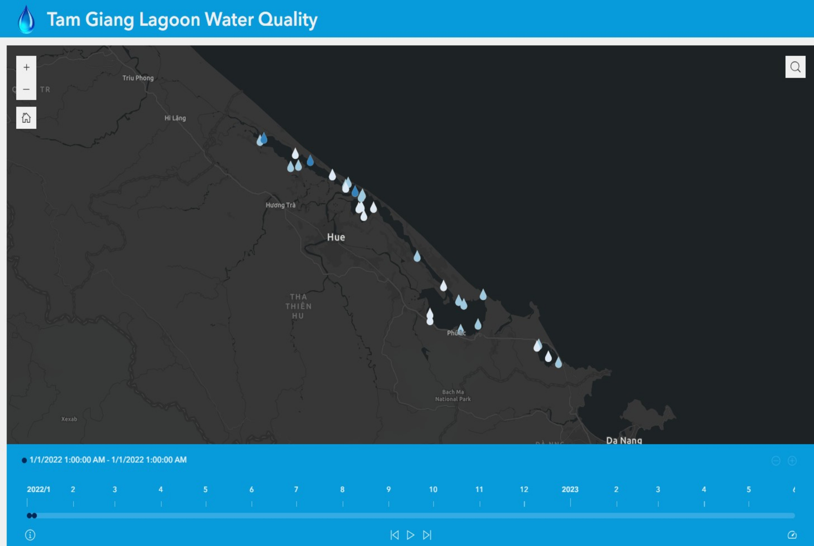

This section highlights some of the projects that I have done during my master's studies and professional
career.
All
Spatial Analysis
Cartographic Maps
Web Application
AI
Master Thesis
Professional Web Project
Terrain Analysis
Geomorphometrical analysis of catchment area around Taxenbach's southern part of Salzburg
Visibility Analysis
visibility analysis for a hotel in Salzburg using line of sight and viewshed techniques in ArcScene
Network Analysis
Planning routes and Service area proximity for waste glass collection by trucks
Weighted Overlay and Cost Distance Analysis
Suitable sites identification for tourist hotels in Austria using weighted overlay and cost path
analysis
Spatial Interpolation
Inverse Distance Weighted Method were applied to Temperature Datasets of Czech Republic and Quality
Assessment of that method
Local Spatial Autocorrelation
Anselin Local Moran ‘s Statistical Method were used to identify Moons Crater Origin
Multivariate Regression and Spatial Lag Model
To analyse correlation between employment rate and Average GCSE Score by using Multivariate
Regression
Football Field Mapping Using UAV Drone
Performed UAV Images processing and modelling to create Orthomosaic image and Dem of a football field
Temperature Change Analysis Using Google Earth Engine
Analyzing change in temperature from past 5 years in different cities of Pakistan
Master Thesis
Using geotagged photos to design Etosha National Park map set

Tam Giang Lagoon Water Quality Web Application
This web application was built using Esri Experience Builder that visuaizing time series data of
water quality in Tam Giang Lagoon, Vietnam
Webmap of US Population State wise
Mapbox GL JS was used to developed webmap that visualization population statistice of US states
Interactively
Google Earth Tweets Visualization Using JAVA
3D Model of Terrain
Land Cover Change of Paksiatn Web Application
This application visualizing land cover change in term of urban, vegetation and water from 2017 to
2023
Tourism Web Application
This Web Application visualizes Tourism Places of Pakistan like historical and cultural places,
mountain peaks and national park. This web map help user to get more details about tourist places in
an interactive manner
Thematic Cartographic Map Collection
In this master course I explored different types of thematic cartography method such as choropleth
maps, dot density maps, multivariate maps and others.
Design in Geovisualisation
A course teaching the various methods of taking a boring map and making it into something beautiful
and captivating
Wine Quality Prediction Using Random Forest Machine Learning Model
Prototype location based land ownership portal using Leaflet
A prototype location-based land ownership portal to acquire projects for my company using leaflet and
Geoserver in which users can check ownership status before buying and selling the properties.
Reachability Web Map of Islamabad Using Leaflet Reachability Plugin
This web map shows an areas of reachability based on time or distance for different modes of travel
using the openrouteservice isochrones API.
Lightning Intensity Potential Forest Fire web map using Maplibre GL JS
Web map that visualize lightning data overlayed with land cover and forest layers to assess the impact of lightning on forest fires
Asset level Air Pollutants Webmap
Web map that visualizes different pollutants like NO2, SO2 and their exposure towards population in Indian Gangetic Plane using Mapbox GL JS